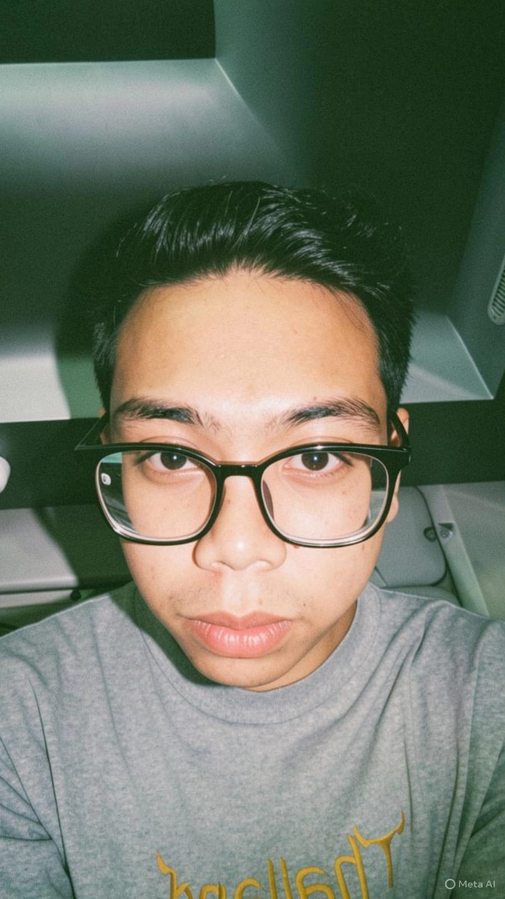
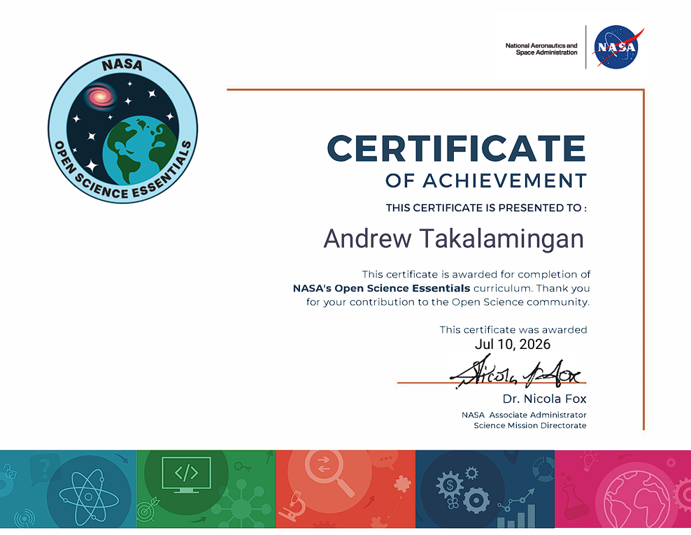
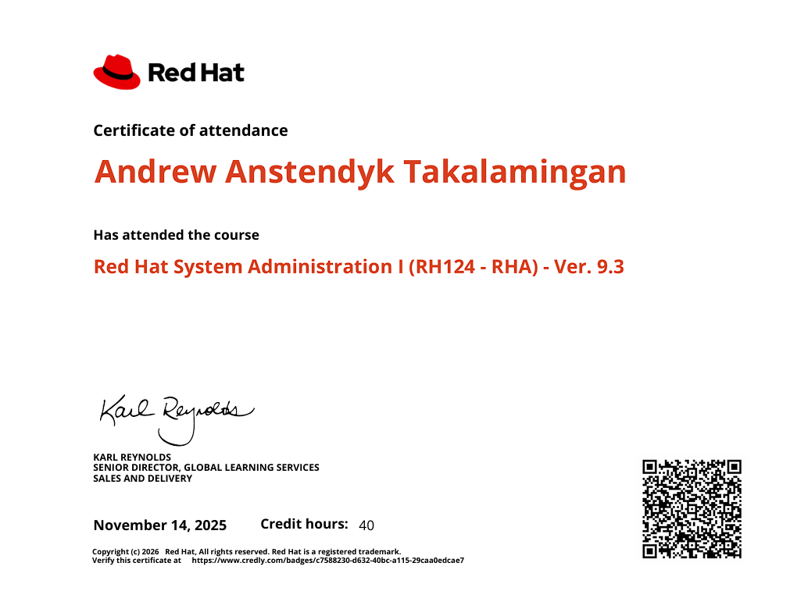
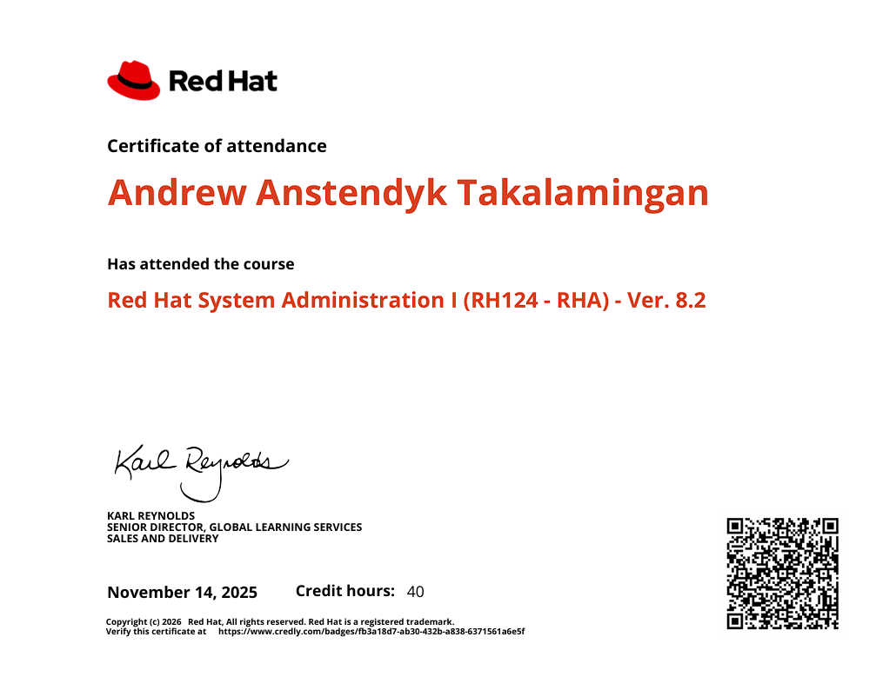

Sedang menempuh pendidikan di Universitas Tarumanagara. Bersemangat dalam mempelajari software engineering, machine learning, dan UI/UX Design.

Sebagai mahasiswa Teknik Informatika di Universitas Tarumanagara, saya membangun pondasi yang kuat di bidang teknologi. Saya sangat tertarik pada bagaimana kode dapat memecahkan masalah dunia nyata.
Eksplorasi saya mencakup berbagai aspek mulai dari Front-end modern, arsitektur Back-end, hingga fundamental Machine Learning seperti Neural Networks. Saya juga aktif merancang antarmuka di Figma untuk memastikan pengalaman pengguna yang optimal.
Validasi keahlian teknis dan pencapaian profesional.

Placeholder Sertifikat NASASertifikasi komprehensif prinsip sains terbuka, manajemen siklus hidup data ilmiah, dan alat kolaborasi riset.

Placeholder Sertifikat RHCSA v9.3Kredensial penguasaan sistem Linux modern, manajemen penyimpanan lokal, keamanan jaringan dasar, dan otomatisasi administrasi pada RHEL 9.

Placeholder Sertifikat RHCSA v8.2Penguasaan fundamental teknis command-line dan pemeliharaan arsitektur sistem dasar pada lingkungan RHEL 8.
Karya akademik, eksplorasi pribadi, dan kolaborasi.
Mari Berkolaborasi
Terbuka untuk diskusi proyek, kerja kelompok, peluang magang, atau sekadar berbagi wawasan tentang teknologi.
Sapa Andrew